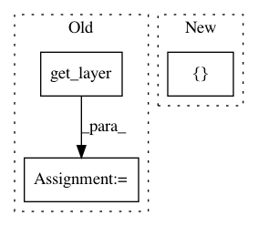

83f0a576015953b30bf8a05fc0033983e0d07354,official/nlp/bert_models.py,,pretrain_model,#Any#Any#Any#Any#,260
Before Change
pooled_output = bert_submodel.outputs[0]
sequence_output = bert_submodel.outputs[1]
pretrain_layer = BertPretrainLayer(
bert_config,
bert_submodel.get_layer(bert_submodel_name),
initializer=initializer,
name="cls")
lm_output, sentence_output = pretrain_layer(pooled_output, sequence_output,
masked_lm_positions)
pretrain_loss_layer = BertPretrainLossAndMetricLayer(bert_config)
After Change
output="predictions")
lm_output, sentence_output = pretrainer_model(
[input_word_ids, input_mask, input_type_ids, masked_lm_positions])
pretrain_loss_layer = BertPretrainLossAndMetricLayer(
vocab_size=bert_config.vocab_size)
In pattern: SUPERPATTERN
Frequency: 3
Non-data size: 3
Instances
Project Name: tensorflow/models
Commit Name: 83f0a576015953b30bf8a05fc0033983e0d07354
Time: 2019-11-22
Author: chendouble@google.com
File Name: official/nlp/bert_models.py
Class Name:
Method Name: pretrain_model
Project Name: tensorflow/cleverhans
Commit Name: e2c42617183d129c9e9b3eb4b14e54c96f80f29e
Time: 2017-06-30
Author: nicholas@carlini.com
File Name: cleverhans/utils_keras.py
Class Name: KerasModelWrapper
Method Name: _fprop
Project Name: fizyr/keras-retinanet
Commit Name: 540bbad3ebe569c578c9eccf605cc9b82b4e9f20
Time: 2018-02-23
Author: cgratie@gmail.com
File Name: keras_retinanet/models/mobilenet.py
Class Name:
Method Name: mobilenet_retinanet